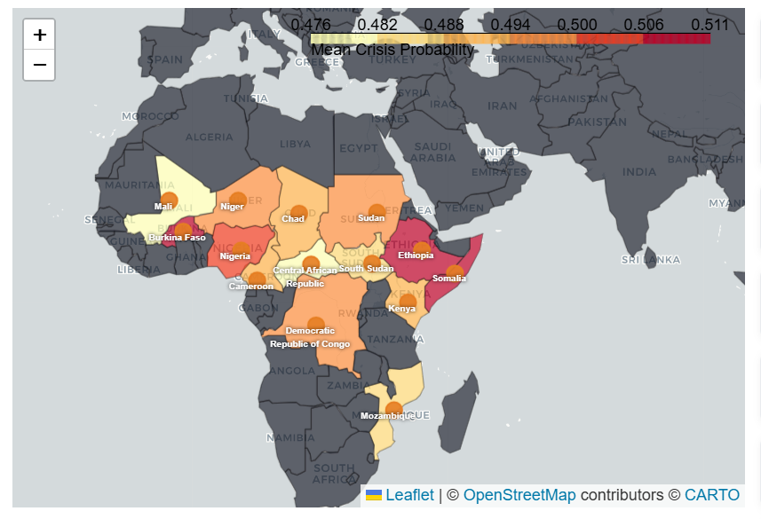
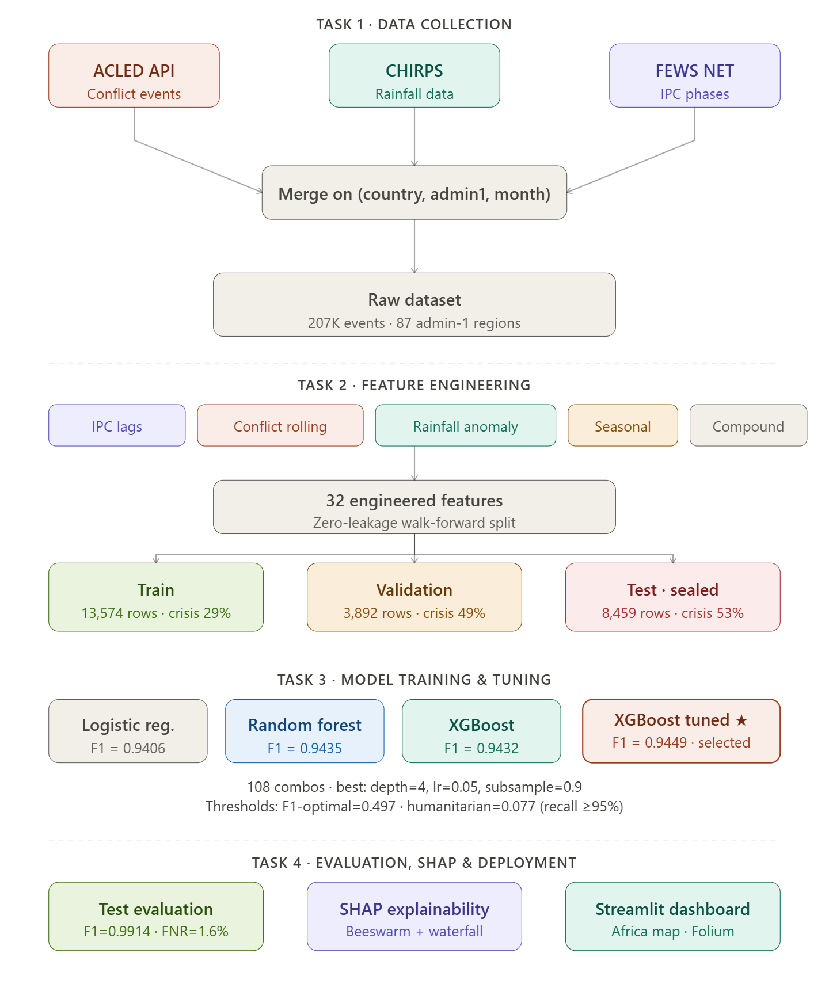
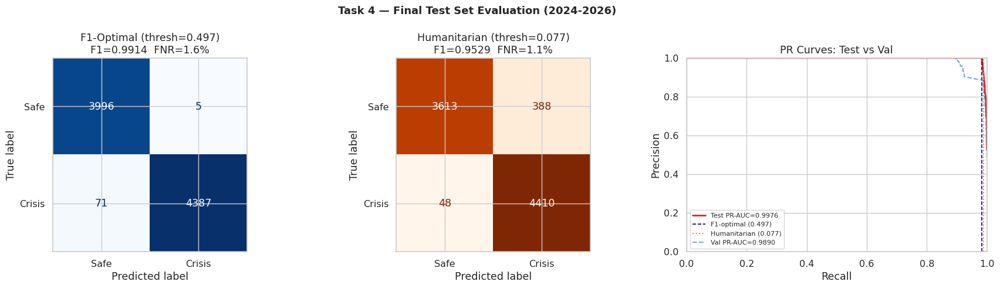
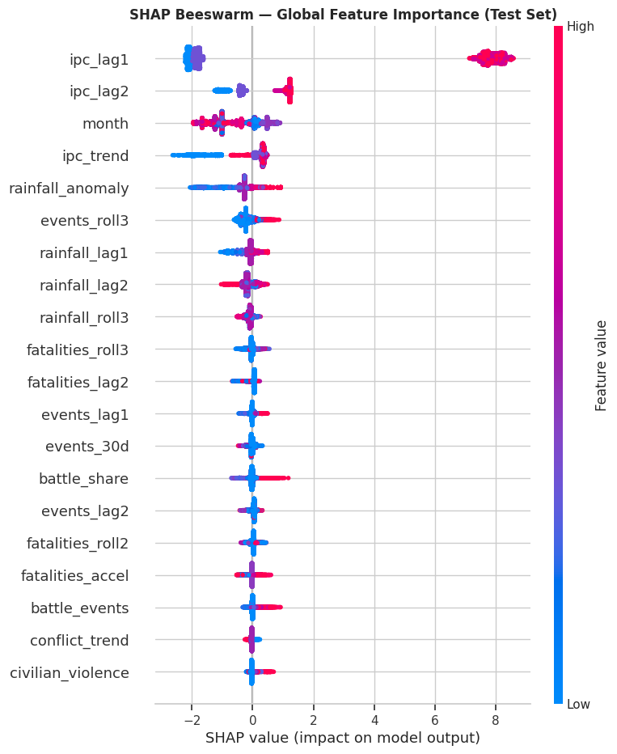

Demo video is not bundled to keep the site lightweight. Contact me for a walkthrough.
Humanitarian Mission
Missing a food crisis costs lives. This system integrates armed conflict data (ACLED), satellite rainfall (CHIRPS), and historical IPC phases to help humanitarian organizations pre-position aid 3 months before a crisis peaks.
System Architecture
- Model: XGBoost (Gradient Boosting)
- Interpret: Global & Local SHAP
- Maps: Folium Choropleth & Markers
- Deployment: Streamlit Cloud
- Validation: Walk-forward cross-validation
Regional Accuracy
Project Methodology
01. Multi-Source Data Fusion
Engineered a pipeline to ingest and synchronize 207,682 conflict events, monthly precipitation anomalies, and historical IPC Phase data. Designed a 32-feature dataset capturing conflict intensity, rainfall shocks, and seasonal hunger patterns.
02. Predictive Modeling & Optimization
Deployed XGBoost with hyperparameter tuning via Optuna. Implemented a dual-threshold deployment strategy: F1-Optimal for standard operations and Humanitarian-Mode (Threshold=0.07) for maximum crisis sensitivity.
03. SHAP Explainability for Decision Makers
Integrated SHAP to provide "Why?" for every prediction. Waterfall plots explain specific regional risk drivers (e.g., Boko Haram activity + Lean Season peak), transforming black-box predictions into actionable forensic intelligence.
Interactive Africa Risk Map
The final output is a dynamic geographic assessment tool. Using Folium, I mapped mean crisis probabilities across 14 panel countries, validated against ground-truth famine declarations in South Sudan and Sudan.
Fig 1: Predicted Africa Food Crisis Risk Map (2024-2026)
Key Performance Metrics

End-to-End Pipeline Architecture

Precision-Recall & Confusion Matrix

Global Feature Impact (SHAP Beeswarm Analysis)
Review the Research
Full analytical methodology and walk-forward validation logs.